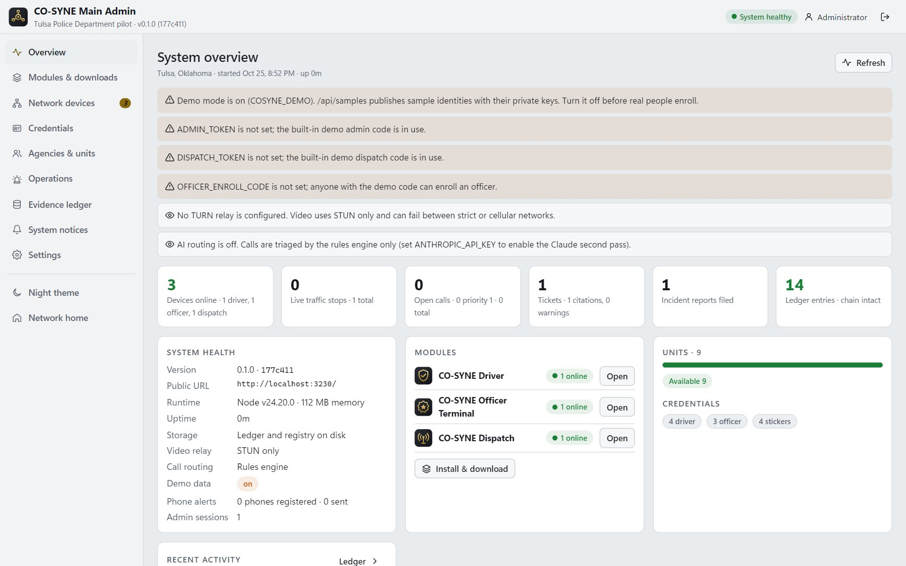

Safer stops. Stronger trust. Complete records.
CO-SYNE gives officers verified information before the approach, gives drivers proof of who is stopping them, and gives your agency a tamper-evident record of every stop, from scan to sealed report.

The patrol car's console, rebuilt around verification
A full-screen terminal for the patrol vehicle, with every tool for the stop in one place.
- Sticker scannerScan the CO-SYNE sticker from the car, or look up by plate. The stop opens with the driver's verified credential.
- Verified driver, vehicle and insuranceLicense, registration and insurance with simulated records checks, plus any accommodation notes.
- Video, voice and textTalk to the driver from the patrol car. Recordings are anchored as evidence.
- Signed eCitations and reportsSuggested violations, citations signed with the officer's device key, and an auto-drafted report narrative.
- CAD, map and messagesCalls for service, unit status, the live map and the ops channel with dispatch.

Every stop, call and unit, live
The communications center sees the whole network as it happens, and can step in at any moment.
- Live map and queueStops, D2ES alerts and units on one map, with priority triage and the nearest available units.
- Drop in to any stopJoin the officer and driver by video and voice, or listen in muted. Everyone sees that dispatch joined.
- Records, citations and reportsLook up drivers and vehicles, and view or print every citation and sealed report.
- Credential controlRevoke a credential instantly. The device is signed out and can no longer verify at a stop.

Oversight of the whole system
System health, connected devices, the credential registry, units, operations, the evidence ledger, system notices and app distribution, in one console that works on a phone.
- Health and security checklistUptime, storage, video relay, routing and configuration warnings at a glance.
- System noticesSend a banner to every driver phone, patrol terminal or dispatch console.
- App distributionInstall links, QR codes and desktop launchers for each module.

An audit trail you can prove
Every alert, routing decision, identity check, records query, video join, chat message, ticket and report is written to an append-only ledger that anyone can verify.
Audited records queries
Every lookup is logged with who ran it and from which unit, the same discipline CJIS requires.
Sealed reports
Incident reports and citations are hashed when filed, so the version on record can always be proven.
Export anytime
Administrators can verify the full chain and export it for records, courts or review boards.
Transparency for the public
Drivers see the officer's verified identity and the reason, and can flag a stop that feels wrong.
From first call to first verified stop
- Step 1
Walkthrough
A live demonstration for your command staff, dispatch and IT, using your own scenarios.
- Step 2
Trust setup
Your agency becomes a credential issuer in the CO-SYNE trust registry, and officers enroll their devices.
- Step 3
Devices
Install the officer terminal (kiosk mode for patrol cars) and dispatch console from the downloads page.
- Step 4
Pilot
Start with a district or shift, with drivers enrolled through outreach and stickers.
Bring CO-SYNE to your agency
Tell us about your agency or dispatch center and we'll set up a walkthrough with your team.